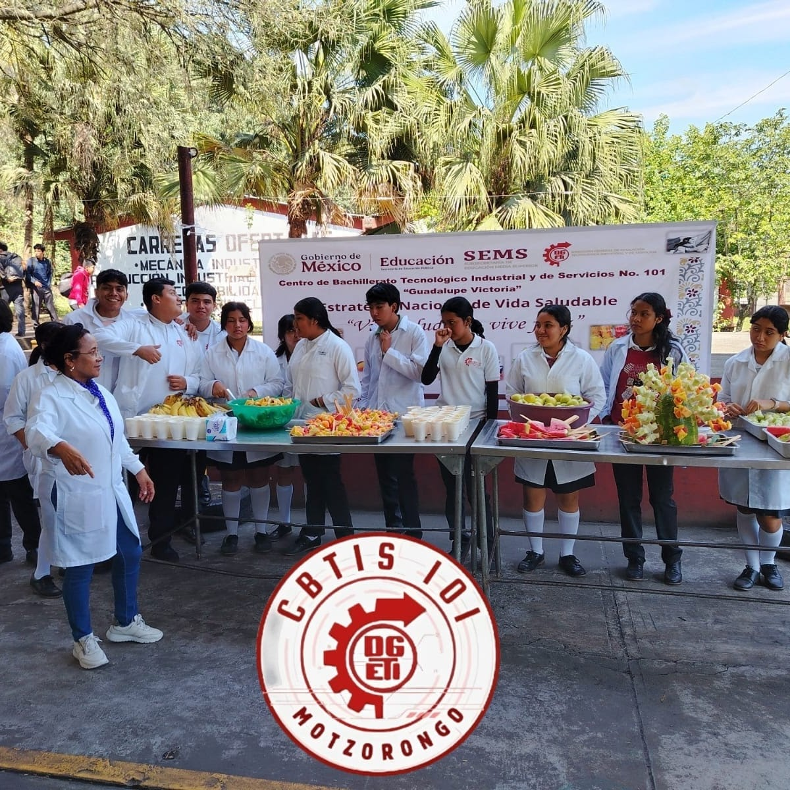
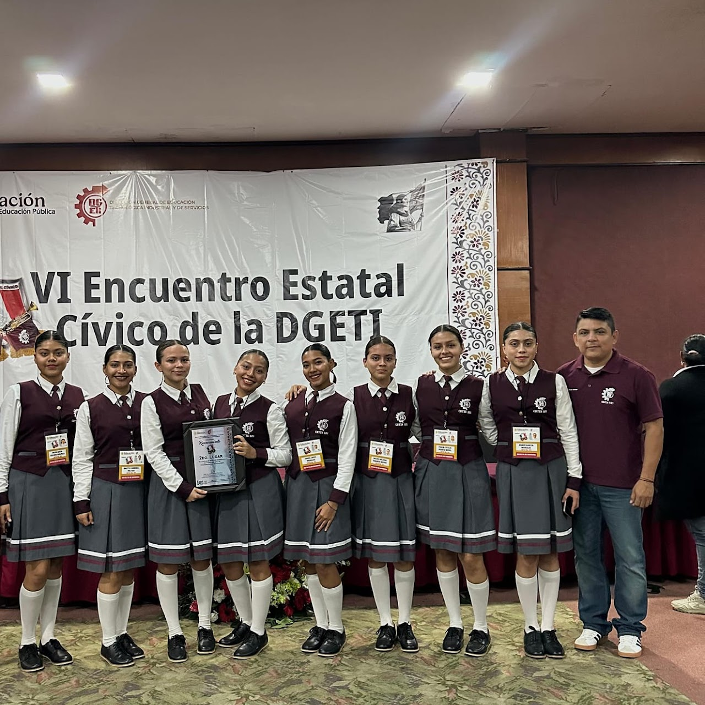

- Eventos deportivos
- Concursos académicos
- Actividades culturales
- Vinculación con la comunidad
Semana Nacional de Vinculación
La Mtra. Eva García Montes y estudiantes del VI semestre de Contabilidad visitaron la Esc. Sec. Tec. No. 57 con el mensaje: "El fentanilo te mata, vive feliz, aléjate de las drogas".

Cómo parte de la Estrategia Nacional de Vida Saludable
El día de hoy los alumnos realizaron brochetas de frutas, las cuales fueron obsequiadas a toda la comunidad escolar.
Nuestra Escolta logro el Segundo Lugar A nivel Nacional
El día de hoy los alumnos realizaron brochetas de frutas, las cuales fueron obsequiadas a toda la comunidad escolar.
